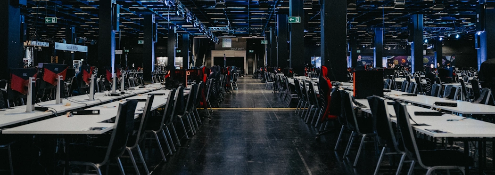
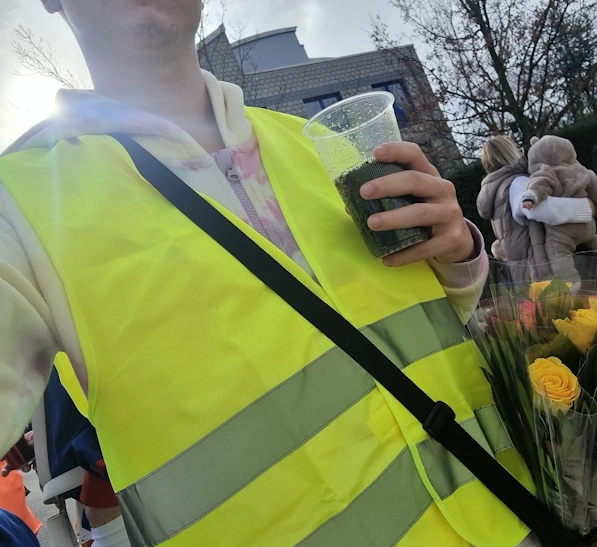
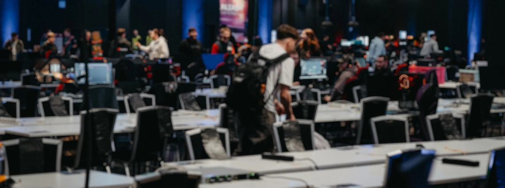

Meine Volunteer Arbeit
Seit 2018 bin ich als Volunteer auf verschiedenen Messen, Events und Conventions unterwegs und unterstütze dort, wo gerade Hilfe gebraucht wird. Dabei durfte ich in den unterschiedlichsten Bereichen Erfahrungen sammeln – von Technik über Eventbetreuung bis hin zum Personenschutz. Bei der gamescomLAN bin ich regelmäßig im IT-Support, beim Check-In und Einlass sowie beim Auf- und Abbau im Einsatz. Aber nicht nur dort – auch auf der Gamescom selbst habe ich verschiedene Stand-Events mitgestaltet, sei es im Gaming-Bereich oder bei physischen Aktivitäten. Gemeinsam mit Partnern wie der Stadt Köln, dem Jugendforum NRW und der gamescomLAN konnte ich Besuchern unvergessliche Erlebnisse bieten.
Neben Gaming-Events habe ich auch im Catering-Service auf den Videodays in Köln mitgeholfen und war in Berlin beim ERAZER Turnier im XPERION dabei. Dort habe ich nicht nur beim Aufbau und Abbau mit angepackt, sondern auch als technischer Ansprechpartner dafür gesorgt, dass alles reibungslos läuft.
Etwas ganz anderes, aber genauso wichtig: Als Wagen-Engel im Kölner Karneval kümmere ich mich um den Personenschutz für verschiedene Vereine und sorge dafür, dass alle sicher durch die jecken Tage kommen. Jedes Event ist anders und bringt neue Herausforderungen mit sich – genau das macht es für mich so spannend. Ich liebe es, Teil solcher Veranstaltungen zu sein, mit anzupacken und für einen reibungslosen Ablauf zu sorgen.
